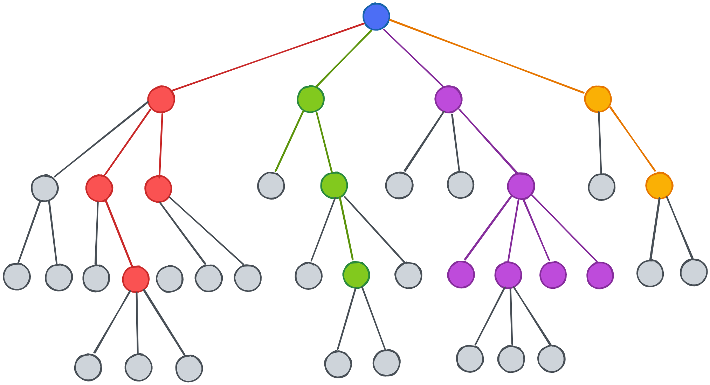
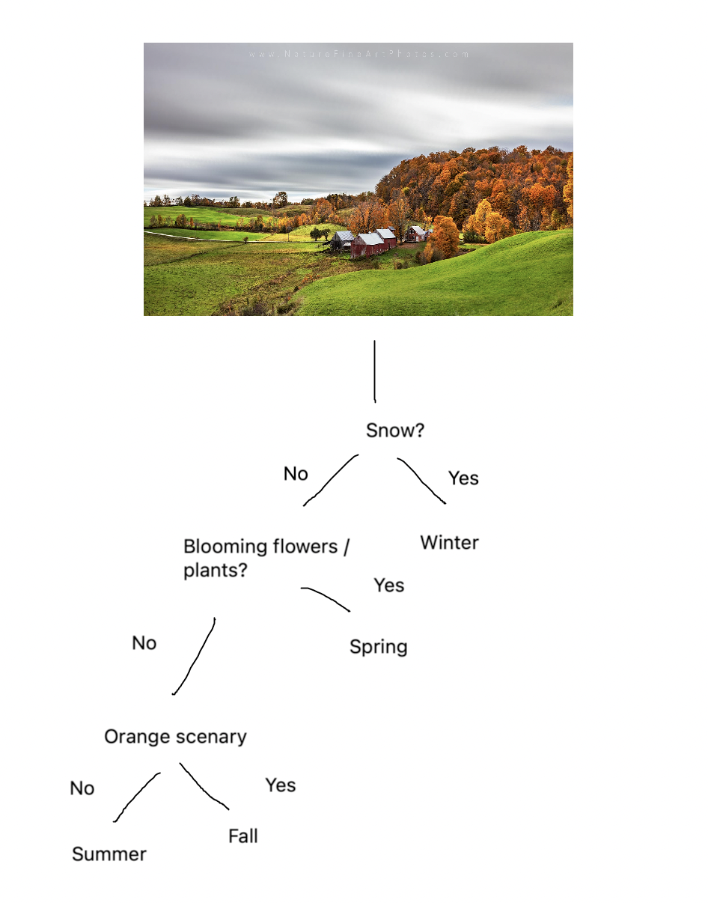
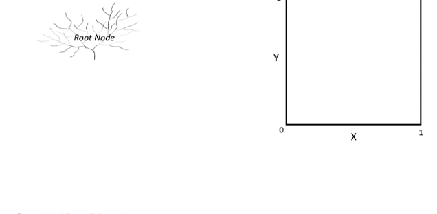
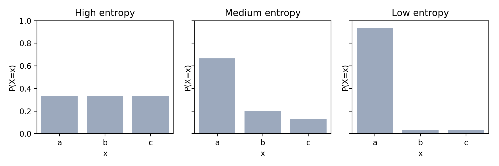
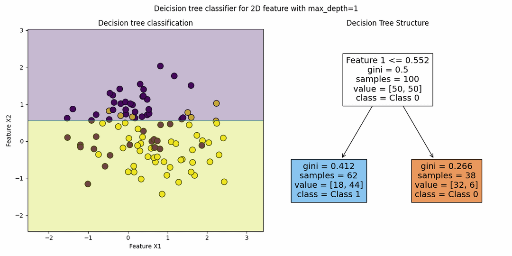
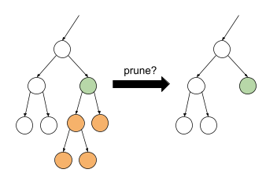

I was deciding whether I wanted a primer for today. If I made a primer, it would take some time to come up with a story. If I didn't write a primer, it would be weird. So I decided to make a primer while thinking about whether I should. I just made a decision based on some if-else chain. In fact, I made the best decision possible given my dilema. In other words, I minimized the entropy.
A decision tree is just an if else chain. If a condition, then do this. If another condition then do that. We chain these conditionals to make a decision. It is a supervised approach used for regression and classification. Thats it!!
Imagine you are shown a picture of nature. Your job is to tell what season it is in. What might you think of? Maybe your thought process looks like this:

These are just if-else conditions that led you to the correct season, Fall. For decision trees, we focus on 1 feature at a time, asking how does this feature help me solve the problem. Of course, we need to examine this mathematically.
Hyperparameters include:

Are you surprised by 3 repeated "Entropy" in the title? In physics, entropy describes the amount of chaos a system has. We can quantify chaos by saying that entropy is the surprise of a system.

So why do we care about entropy? Well when making deicisions, you are taking the decision that minimizes your surprise (entropy). Everytime you make a decision, your entropy splits: $$ H_{after \ split} = H_L \cdot P_L + H_R \cdot P_R $$ where $L$ represents left and $R$ represents right. Entropy decreases with every split you make. As you go down the tree, you now have a fraction of the entropy due to the children being more similar. Your basically maximizing splits that seperate your data into clean groups. Each time you split, your data is transformed into something cleaner (hopefully) than the original no split data. Reducing entropy is the same as increasing information.
Typically, there is a hyperparamter that controls the maximum depth of the tree. If there was no hyperparameter, the decision tree could very easily overfit as it would eventually make very hyper specific generalizations for your dataset. In other words, a decision tree can achieve 100% accuracy! But that is usually bad!!! That means your decision tree optimizes too much for your dataset. Given a new dataset, it will most likely NOT perform very well as it basically makes exceptions (hyper specific ruleset) for your data. So when do we stop splitting? Here are some common methods:

Decision trees take very long to train on large datasets. For each feature, you have to check a TON of conditions.
Should I split on x, y, or z? Which split maximizes my information gain? For each feature, you need to build the conditions
that make the best decision forming a large and expensive tree.
However, this means that when you figure that out, inference (prediction) is very fast.
In large datasets, we can have a ton of features which also increases the risk of overfitting.
To mitigate this we have to do some preprossessing through feature engineering and figuring out the
features that actually matter to the decision making. For isntance, to tell the season, whether it is raining might not help too much
because it rains in every season albeit less some. Other ways of reducing overfitting include:

Tree pruning happens when you have a grown tree. It is similar to removing diseases crops in your field. Here is the general algorithm: $$ \begin{align} &\ \text{Create validation accuracy for current tree} \\ &\text{While (further pruning improves validation):} \\ &\qquad \ \text{Find impact on validation for each node} \\ &\qquad \ \text{Greedily remove the node with the most impact} \\ &\qquad \ \text{Check if removing it improves validation accuracy} \\ &\qquad \ \text{If so, replace it with a leaf} \\ &\qquad \ \text{Else, put it back} \end{align} $$
Decision trees by themselves are unstable. This is because the first splits affect all the splits below it. So how do we combat this? Ensemble learning! This means combining multiple models into 1 (through voting) to improve stablity (reduce variance) of the final classifier.

Bagging or Bootstrap Aggregating samples the dataset multiple times, using all the features:
$$ \begin{aligned} \text{Picks samples $S^*$ (bootstrap sample) of size $n$ with replacement} \\ \text{Train on $S*$ to get our decision tree $t^*$} \\ \text{Repeat above $\beta$ times to get $t_1, t_2, ..., t_\beta$} \\ \text{Final model } t(x) = \operatorname{majority}\{t_\beta(x)\} \\ \end{aligned} $$
Random forest is the same thing as bagging decision trees expect with randomness. We will randomly pick $m$ of the $d$ available attributes (random subset of features) at every split when growing the tree. In other words, random forest = bagged random decision tree.
Hyperparameters include:
Sorry Pikachu wasn't around today. Hope you learned about how decision trees are if-else statements that minimize entropy or maximize information gain. Remember that decision trees take a long time to train and overfit. We control them by setting hyperparams, doing some feature engineering, or using ensemble. But when we do get a finished tree, they are speedy. Here is Pikachu on a tree: